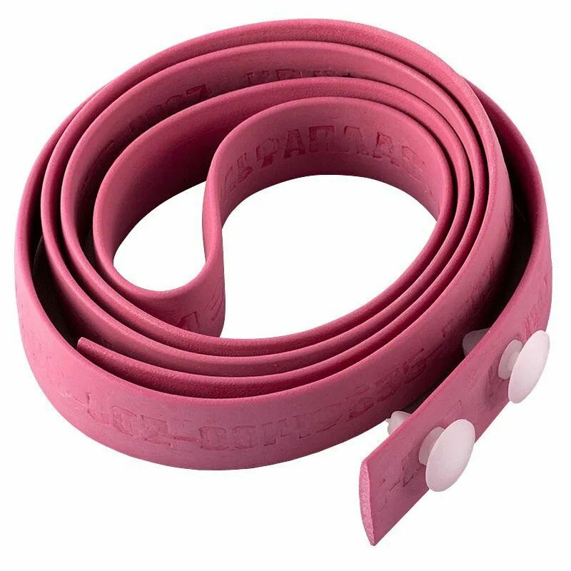
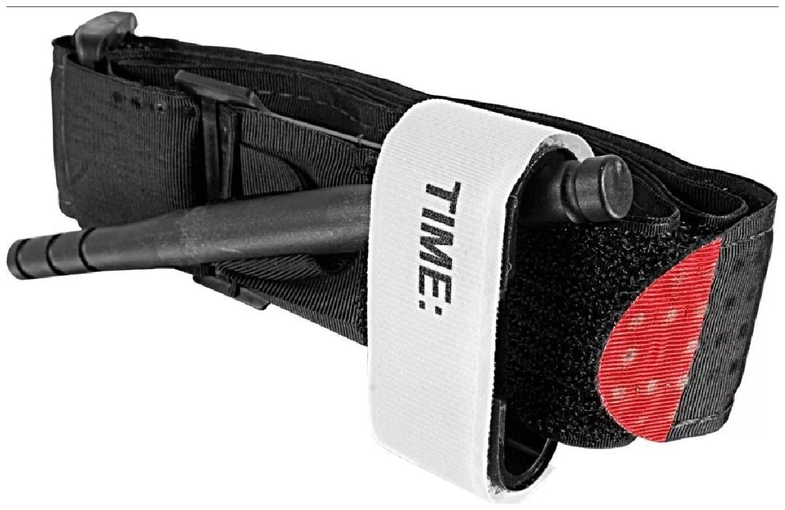
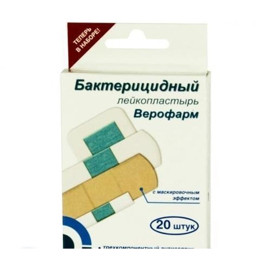
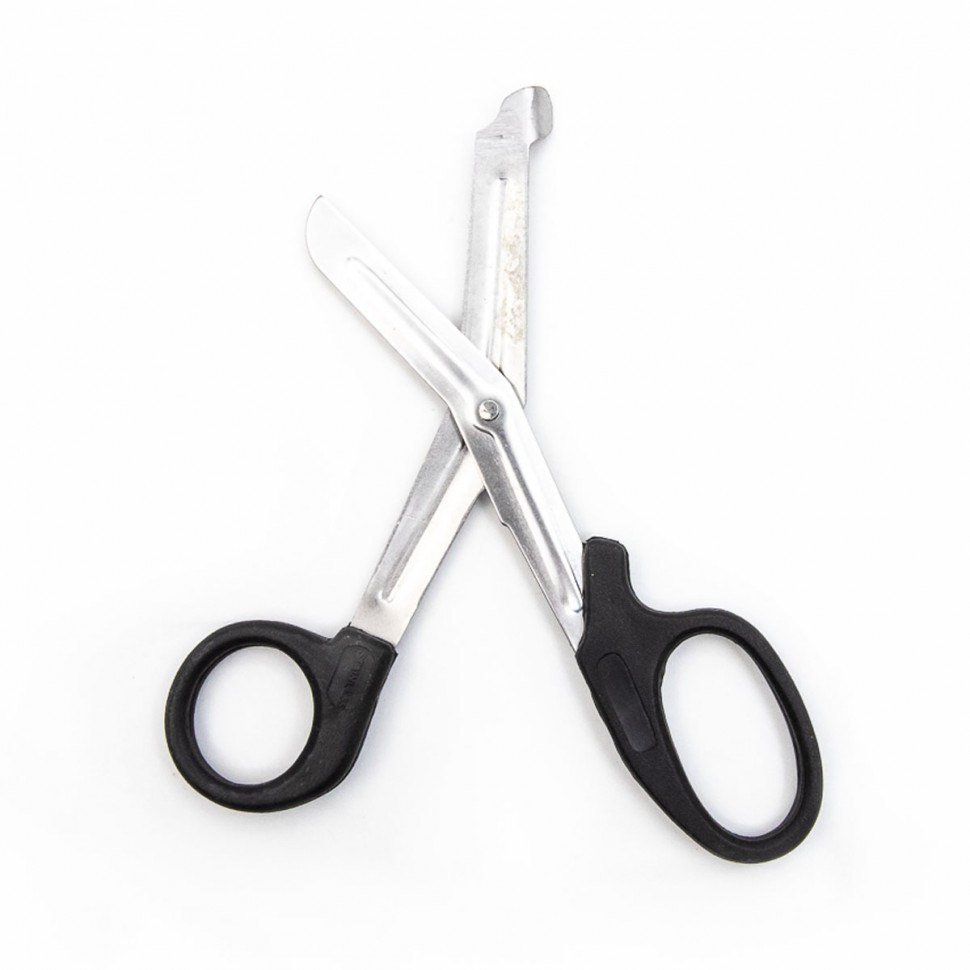
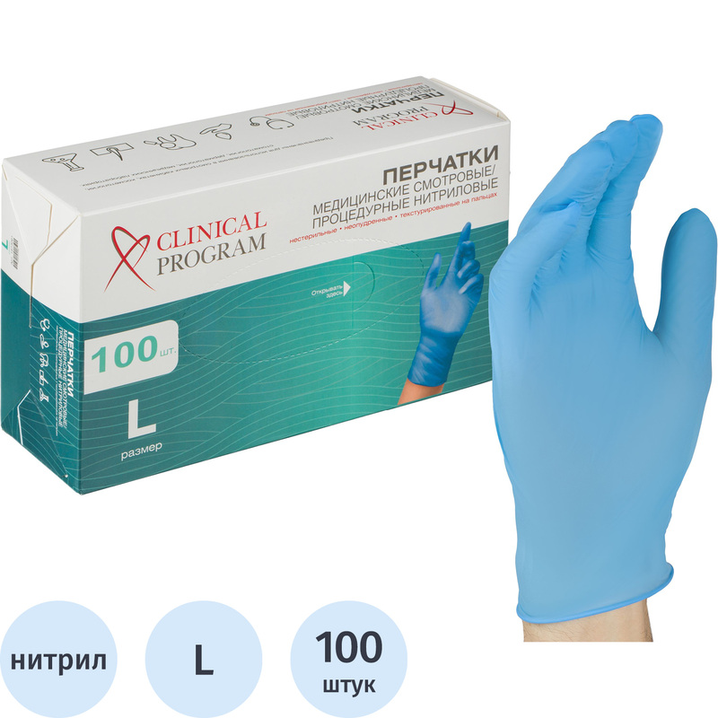

Средства для оказания первой помощи
Какие средства существуют, чтобы оказать первую помощь?
Жгут Эсмарха-используется для временной остановки крови. Представляет собой резиновую ленту 1,5 метра длиной.

Турникет-тоже используется для временной остановки крови. Представляет собой ленту из плотного, синтетического материала. Есть много видов, самый распространенный-турникет-закрутка, после наложения вороток фиксируется, и услиливает затягивание.

Бинт марлевый медицинский. Предназначен для наложения повязок и фиксации кончностей.

Пластырь бактерицидный.Предназанчен для закрытия мелких ран и порезов

Пластырь рулонный. Предназанчен для для фиксации повязок.

Ножницы для перевязочного материала.Предназаначены для вскрытия перевязочного материала и разреза одежды пострадавшего если это потребуется.

Устройство для проведения исскуственного дыхания "Рот-Устройство-Рот"

Перчатки медицинские. Защита участника оказания первой помощи от контакта с кровью и биологическими жидкостями пострадвшего

Покрывало спасательное. Нужно для укрытия пострадавшего с тяжелой травмой серебристой стороной вверх.